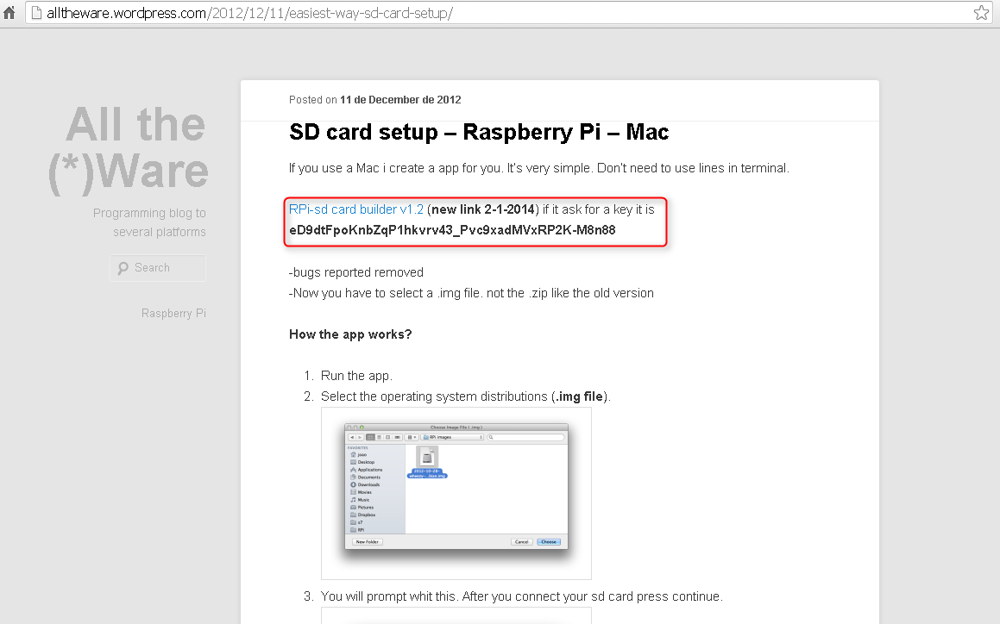
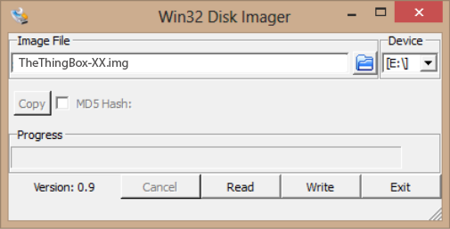
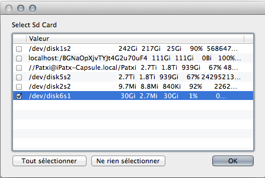
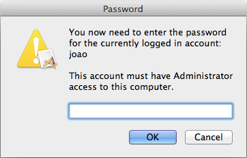

Prepare the Raspberry Pi
Necessary tools
To prepare the Raspberry Pi, some tools are needed:
- A SD card. On the Pi, all the software is on a SD Card. Thus the first step to create your own ThingBox is to write the ThingBox firmware to the SD card. Warning : the SD card will be totally over-written, so this SD card will be used only for the Raspberry Pi. Don’t forget to backup your Node-RED files if you update
- A Windows or Macintosh computer (with a SD port to access the SD card)
- The ThingBox firmware,
- A particular application for the computer to write the SDCard.
Download the ThingBox firmware
As this firmware runs on the Pi, it is the same if you use Windows or Macintosh. Download it from this link.
Download the application to write the firmware on the SD card
On Windows, download the application Disk Imager:
On Macintosh:

Write the ThingBox firmware to the Pi SD card
A common mistake is to flash the zip file to the SDCard: it should be unzipped first !!!
On Windows
- 1 : Extract the content of the ThingBox firmware from the zip file (It works well with Bitser or WinRAR on Windows and Stuffit on Mac but other zip software should work but be aware that the generic unzipper provided with Windows/Mac does not extract the file for an unknown reason!!). We try to zip another way for next release.
- 2 : Extract the content of the SD Disk Imager from the zip file
- 3 : Put the SD card into the SD port of the computer
- 4 : Launch the Disk Imager application
- 5 : Choose the unzipped ThingBox firmware
- 6 : Choose the destination Device to be the SD Card and NOT any other hard drive

- 7 : Choose Write and be patient
Finally, the SD card is ready to use.
On Macintosh
- 1 : Extract the ThingBox firmware and the rpi-sd card builder.zip
- 2 : Launch SD card builder
- 3 : Select the ThingBox firmware to write
- 4 : Choose the SD card on which to flash the Pi image, confirm and enter the password if requested


- 5 : SD card setup is flashing the Pi image on the SD card. Be patient
Finally, the SD card is ready to use.